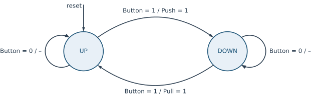
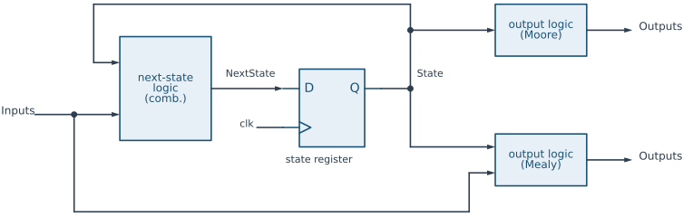
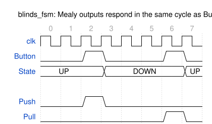
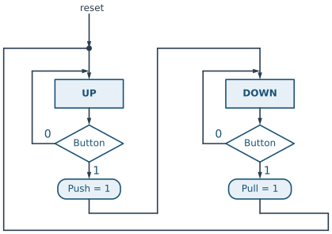
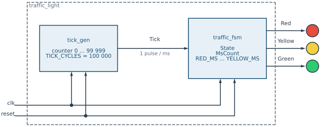
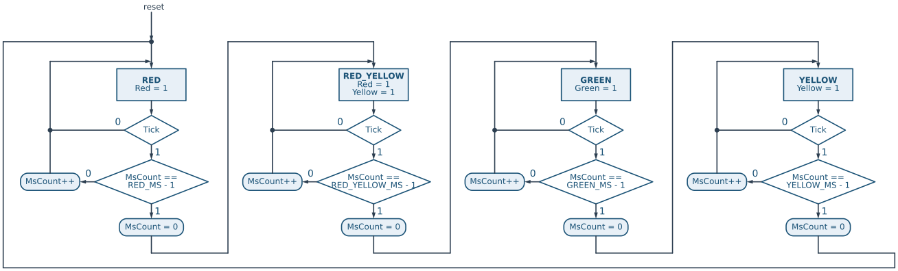
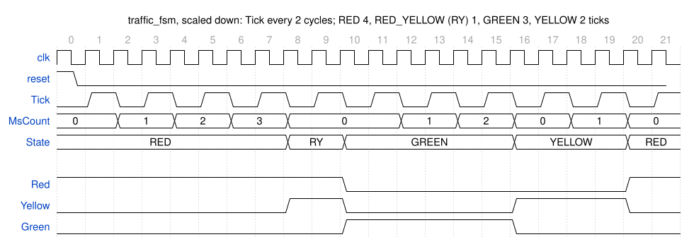

6 Finite State Machines
Finite State Machines
6.1 Goal for this week
- Know what a finite state machine is, and where it is used in a digital system
- Describe an FSM with a state diagram and with an ASM chart
- Tell Moore and Mealy machines apart, and choose a state encoding
- Write an FSM in SystemVerilog as state register, next-state logic and output logic
- Build a complete system from a tick generator and an FSM: a traffic light
6.2 Theoretical foundations
The first part of this chapter is the theory: what a finite state machine is, the ways to draw one, how it maps onto hardware, and how it is written in SystemVerilog. We use a small example throughout, a controller for window blinds. The second part (Section 6.3) applies all of it to a complete design, a traffic light.
6.2.1 What is a finite state machine?
A finite state machine (FSM) is a model of a system that, at any moment, is in one of a finite number of internal states. The state summarizes everything about the past that matters for the future: the machine does not remember how it got into a state, only which state it is in. At each clock edge, the machine moves to a next state, which depends on the current state and on the external inputs, and it produces outputs that depend on the state and, in some machines, on the inputs as well.
Formally, an FSM is a tuple \((S, I, O, \delta, \lambda, s_0)\):
- \(S\) is the finite set of states, and \(s_0 \in S\) the initial state, the one the machine enters on reset;
- \(I\) and \(O\) are the sets of input and output values;
- \(\delta : S \times I \to S\) is the next-state function, which gives the next state for each combination of current state and input;
- \(\lambda\) is the output function.
A counter is the simplest example: its states are the values 0 to 15, its next-state function is “add one”, and it has no inputs apart from the reset. FSMs become interesting when the inputs steer them.
In a digital system, FSMs are the controllers. A larger design is usually split into a datapath, the registers, adders and multiplexers that process the data, and a control path, which examines the external commands and the status of the datapath and activates the right control signals at the right time. A UART transmitter, a bus interface waiting for a response, a memory controller sequencing a read: in each of them, the part that decides what happens next is an FSM.
6.2.2 Describing an FSM: the state diagram

The most common way to describe an FSM is a state diagram: a directed graph in which every node is a state and every arrow a transition.
Take a controller for window blinds. A single push button controls a servo motor: if the blinds are up, a press pushes them down; if they are down, a press pulls them up. The FSM has one input, Button, and two outputs, Push and Pull, which drive the motor. It must remember where the blinds are, so it needs two states, UP and DOWN (Figure 6.1).
Each arrow is labelled with a condition and, after a slash, the outputs that are 1 when the machine takes that arrow. In UP, if Button is 1 the machine raises Push and moves to DOWN. If Button is 0, it takes the arrow back to UP, and no output is active (the – after the slash). DOWN is the mirror image, with Pull. The arrow marked reset shows the initial state.
Designing an FSM always follows the same three steps, and the state diagram is where they are written down:
- Define the states. What must the machine remember? Here, whether the blinds are up or down.
- Define the transitions. For each state and each input combination, which state comes next? Every state must have a way out for every input combination, even if that way is “stay here”.
- Define the outputs. Which outputs are active, in which state, and under which input?
The same information can be written as a state table, one row per state and input combination:
| State | Button |
Next state | Push |
Pull |
|---|---|---|---|---|
UP |
0 | UP |
0 | 0 |
UP |
1 | DOWN |
1 | 0 |
DOWN |
0 | DOWN |
0 | 0 |
DOWN |
1 | UP |
0 | 1 |
The table is the next-state function \(\delta\) and the output function \(\lambda\) written out in full. It is the most precise description, but it grows with every state and every input bit, so for anything but tiny machines we draw the diagram instead.
6.2.3 The structure of an FSM in hardware

In hardware, every FSM has the same three parts (Figure 6.2):
- The state register stores the current state. It is a set of flip-flops, all clocked by the system clock, and it is the only memory in the machine. On reset it loads the initial state.
- The next-state logic is a combinational circuit that implements \(\delta\): from the current state and the inputs, it computes
NextState, which the register loads at the next clock edge. - The output logic is a combinational circuit that implements \(\lambda\) and produces the outputs.
The loop from the register output, through the next-state logic, and back into the register is the same loop as in the counter of the previous chapter, written in its way 2: the register only stores, and all the decisions are in the combinational logic in front of it. An FSM is a counter whose “+ 1” has been replaced by an arbitrary function of the state and the inputs.
6.2.4 Moore and Mealy machines

Button comes from a synchronous edge detector and is high for one cycle; Push and Pull respond in the same cycle, State at the next edge.
The output logic in Figure 6.2 comes in two forms, and they give the two classic kinds of FSM:
- In a Moore machine, the outputs depend only on the current state: \(\lambda : S \to O\). The outputs are written inside the states of the diagram, and they change only at a clock edge, when the state changes. A traffic light is a Moore machine: the lamps are a function of the state.
- In a Mealy machine, the outputs depend on the current state and the inputs: \(\lambda : S \times I \to O\). The outputs are written on the arrows, as in Figure 6.1. The blinds controller is a Mealy machine:
Pushis 1 only inUPand only whileButtonis 1.
Figure 6.3 shows what this means in time. In column 2 Button is 1, and Push is 1 in that same cycle, before the state has changed; the state becomes DOWN only at the edge that starts column 3. The same happens with Pull in column 6.
The two kinds trade speed against safety:
| Moore | Mealy | |
|---|---|---|
| Outputs depend on | the state only | the state and the inputs |
| In the diagram, outputs are written | in the states | on the transitions |
| Reaction to an input | one clock cycle later | in the same cycle |
| Combinational path from input to output | no | yes |
| Number of states | often more | often fewer |
A Mealy machine reacts one cycle earlier and often needs fewer states. To get a one-cycle Push pulse from a Moore machine, the blinds controller would need extra states such as PUSHING and PULLING, in which the output is active. The price of a Mealy machine is the combinational path from input to output. Any glitch on the input appears on the output, and the path adds to the timing of whatever the output drives. If two Mealy machines feed each other, the paths can even close into a combinational loop. In this book we prefer Moore outputs, and use Mealy outputs where the one-cycle reaction really matters, for example for a one-cycle Done pulse.
6.2.5 State encoding
The states have names in the diagram, but the state register stores bits, so every state needs a binary code. The choice of codes is the state encoding, and there are three common ones. For \(N\) states:
- Binary encoding numbers the states 0, 1, 2, … and needs \(\lceil \log_2 N \rceil\) flip-flops. It is the most compact.
- Gray encoding uses the same number of flip-flops, but assigns codes so that states that follow each other differ in a single bit. That reduces switching activity, and so power, when the machine mostly moves along a fixed sequence.
- One-hot encoding uses one flip-flop per state, and exactly one of them is 1 at a time. It needs \(N\) flip-flops, but the logic becomes very simple: “are we in
GREEN?” is a single bit, not a comparison.
For the four states of the traffic light in the second part of this chapter:
| State | Binary | Gray | One-hot |
|---|---|---|---|
RED |
00 |
00 |
0001 |
RED_YELLOW |
01 |
01 |
0010 |
GREEN |
10 |
11 |
0100 |
YELLOW |
11 |
10 |
1000 |
The traffic light cycles RED, RED_YELLOW, GREEN, YELLOW, RED, so with the Gray codes every transition flips exactly one bit, including the one back to the start.
On an FPGA, flip-flops are plentiful (every slice has eight of them, as we saw in the FPGA chapter), while logic depth decides the clock speed. One-hot encoding trades a few flip-flops for shallower next-state and output logic, and is often the fastest choice. In practice, the synthesis tool recognizes FSMs in the code and usually picks the encoding itself: Vivado re-encodes a machine it extracts, and can be overruled with the fsm_encoding attribute. What we write in the code is the meaning of the states, and the encoding is an implementation detail.
6.2.6 The ASM chart

Push and Pull appear in conditional output boxes, on the path where Button is 1.
A state diagram gets crowded quickly: when there are several inputs, and when the machine also has to update counters or registers, the labels on the arrows become long expressions. An algorithmic state machine (ASM) chart shows the same information as a flowchart, which is easier to follow step by step. It uses three kinds of boxes (Figure 6.4):
- A rectangular state box stands for one state. It holds the state name and the Moore outputs that are 1 in that state. Outputs that are not listed are 0.
- A diamond is a decision box. It tests an input or an internal signal, and has a
0and a1exit. - A rounded conditional output box holds the Mealy outputs that are 1 on that path, and the register updates (such as
Count++) that happen on that path.
A state box with all the decision and conditional boxes below it, up to the arrows that enter the next state boxes, forms an ASM block, and one ASM block is one clock cycle. During the cycle, the machine is in the state of the state box, the decisions are evaluated by the next-state logic, and the outputs of the conditional boxes on the active path are 1. At the clock edge the machine follows the active path into the next state.
Compare Figure 6.4 with Figure 6.1: the self-loops of the state diagram are the 0 exits of the decisions, and the outputs that were written after the slash are now in the conditional boxes. The ASM chart has another advantage: it maps line by line onto the SystemVerilog code, as the next section shows.
6.2.7 Describing an FSM in SystemVerilog
The three hardware parts of Figure 6.2 become three pieces of code. Here is the blinds controller, written according to the HIPV coding conventions:
///////////////////////////////////////////////////////////////////////
// blinds_fsm
//
// Purpose: Window-blinds controller. A press of Button pushes the
// blinds down when they are up, and pulls them up when
// they are down.
///////////////////////////////////////////////////////////////////////
module blinds_fsm(
input logic clk, reset,
input logic Button,
output logic Pull, Push);
typedef enum logic {UP, DOWN} state_t;
state_t State, NextState;
// state register
always_ff @(posedge clk)
if (reset) State <= UP;
else State <= NextState;
// next-state logic
always_comb begin
NextState = State; // default: stay
case (State)
UP: if (Button) NextState = DOWN;
DOWN: if (Button) NextState = UP;
default: NextState = UP;
endcase
end
// output logic (Mealy: depends on the state and the input)
assign Push = (State == UP) && Button;
assign Pull = (State == DOWN) && Button;
endmoduleThe states are an enumerated type. typedef enum logic {UP, DOWN} state_t; defines a new type, state_t, whose values have names. The simulator shows those names in the waveform instead of bits, and the compiler refuses to assign an unrelated value to a state_t signal without a cast. Without explicit values the encoding is binary, in the order listed; to choose another encoding, give the values explicitly:
typedef enum logic [3:0] {RED = 4'b0001, // one-hot
RED_YELLOW = 4'b0010,
GREEN = 4'b0100,
YELLOW = 4'b1000} state_t;Following the HIPV naming convention, the state names are constants and are written in MACRO_CASE, the type name ends in _t, and the signals State and NextState are in UpperCamelCase.
The state register is an always_ff with a synchronous reset, exactly the register of the previous chapter. Reset loads the initial state.
The next-state logic is an always_comb with a case on the current state, one branch per state. It begins by assigning the default NextState = State, “stay where you are”. This is the default first, then override pattern: every if without an else falls back on the default, which is exactly the 0 exit of a decision in the ASM chart, and NextState is assigned on every path, so no latch can appear. The default branch of the case catches state codes that do not belong to any state. With two states in one bit there are none, but in a one-hot machine most of the codes are illegal, and the default sends the machine back to a known state instead of leaving it stuck.
The output logic is two assign statements. Because they read Button, this is a Mealy machine. In a Moore machine, the output logic reads only State.
One practical remark. Button must be a one-cycle pulse that is synchronous to clk. A real push button is neither: it bounces for milliseconds, and it is held for millions of clock cycles, during which this FSM would toggle at every edge. On a board, the button first passes through a synchronizer, a debouncer and an edge detector, and only their one-cycle output reaches the FSM. We return to synchronizers in a later chapter.
6.2.8 FSMs with data registers
The blinds controller remembers one bit. Real controllers also have to remember numbers: how many bits of a UART frame have been sent, or how many milliseconds a traffic light has been green. In principle we could make every count a separate state (GREEN_0, GREEN_1, …, GREEN_3999), but that is absurd. Instead, we keep the counter in a register next to the state register. The state is then the named control state plus the contents of these data registers, and the machine is called an FSM with datapath (FSMD).
The coding pattern stays the same, and extends to every such register. Each register X gets a companion signal XNext:
Xis the current value, the output of the register;XNextis the next value, computed by the next-state logic, and loaded intoXat the next clock edge.
The always_ff block loads all of them together (State <= NextState; Count <= CountNext;), and the always_comb block computes all the ...Next signals, each with its default first: CountNext = Count means “keep the value”, and a branch overrides it where the count must change. In an ASM chart, the register updates are the contents of the conditional boxes, written as Count++ or Count = 0. All updates in one ASM block happen at the same clock edge, together with the change of state. The second part of this chapter uses this pattern for the millisecond counter of the traffic light.
6.2.9 Common mistakes
Most FSM bugs fall into a few groups:
- Latches. If some path through the next-state logic does not assign
NextState(or a...Nextregister value), the tool infers a latch. Start thealways_combblock with the defaults. - Trap states. A state code that no branch handles can keep the machine stuck forever after a glitch or a bad reset. Give every
caseadefaultbranch that returns to a known state. - Derived clocks. Slowing an FSM down by clocking it with a counter bit creates a second clock domain and breaks timing analysis. Keep the system clock everywhere, and let the counter produce a one-cycle enable (tick) that the FSM checks, as the traffic light does below.
- Asynchronous inputs. An input that can change at any moment, such as a button or a serial line, can violate the setup time of the state register and leave the FSM in an illegal state. Pass it through a synchronizer first.
- Mealy chains. A Mealy output that feeds the input of another Mealy machine, whose output comes back, forms a combinational loop. Register one of the outputs, or use Moore outputs.
6.3 Practical case: a traffic light
We now apply the theory to a complete, if small, system: the controller of a traffic light. It is a Moore machine with a data register, it needs time intervals that are long compared with the clock period, and it is built from two modules, a counter that marks time and an FSM that uses it.
6.3.1 Specification
The traffic light cycles through four states, and each state lights a different combination of lamps for a different time:
| State | Lights | Time |
|---|---|---|
RED |
red | 5 s |
RED_YELLOW |
red and yellow | 1 s |
GREEN |
green | 4 s |
YELLOW |
yellow | 2 s |
The system clock is 100 MHz, and a synchronous reset puts the light into RED. The outputs Red, Yellow and Green drive the three lamps, and depend only on the state, so the controller is a Moore machine.
6.3.2 System architecture

Tick every millisecond, and the FSM counts those ticks and drives the lamps. Both run on the same clock.
The times are long compared with the clock period. At 100 MHz, 5 s is 500 million cycles, and counting them directly would need a 29-bit counter compared against a large constant in every state. We split the job in two, the same way a UART uses a baud-rate generator (Figure 6.5):
tick_genis a counter that produces a one-cycle pulse,Tick, once every millisecond.traffic_fsmis the FSM. It counts those pulses in a data register,MsCount, and when the count reaches the time of the current state, it moves on to the next state.traffic_lightis the top level, which only connects the two.
The FSM still runs on the 100 MHz clock: Tick is an enable, not a slower clock. Every flip-flop in the design sees the same clock edge, which is the synchronous-design rule of the HIPV coding standard, and the time unit of the FSM is now a millisecond, so the times in the specification appear in the code unchanged.
6.3.3 The 1 ms tick generator
The tick generator is a counter with a comparator. It counts from 0 to TICK_CYCLES - 1, raises Tick for the one cycle in which it holds that last value, and starts again from 0:
///////////////////////////////////////////////////////////////////////
// tick_gen
//
// Purpose: One-cycle Tick pulse every TICK_CYCLES clock cycles
// (1 ms with the default value and a 100 MHz clock).
///////////////////////////////////////////////////////////////////////
module tick_gen #(parameter TICK_CYCLES = 100_000) (
input logic clk, reset,
output logic Tick);
localparam CNT_WIDTH = $clog2(TICK_CYCLES);
logic [CNT_WIDTH-1:0] Count;
always_ff @(posedge clk)
if (reset || Tick) Count <= '0;
else Count <= Count + 1;
assign Tick = (Count == TICK_CYCLES - 1);
endmoduleThe period of Tick is exactly TICK_CYCLES clock cycles, because the counter spends one cycle at each of the values 0 to TICK_CYCLES - 1. With the default of 100 000 and a 100 MHz clock, that is 1 ms. The counter width is derived from the parameter with $clog2, which the tool evaluates at compile time, and it is a localparam because nobody outside should change it. Tick itself is a Moore-style output of the counter: it depends only on the register Count, so it is clean for a whole clock cycle.
6.3.4 The ASM chart of the traffic light

Tick and MsCount, and the conditional updates of MsCount.
The ASM chart (Figure 6.6) has one column per state. The state boxes hold the Moore outputs, the lamps that are on. There are no Mealy outputs, so the conditional boxes contain only the updates of the data register MsCount.
Read the RED column. In this state the red lamp is on. If Tick is 0, we take the 0 exit back to the entry of RED: nothing changes. If Tick is 1, a millisecond has passed, and the second decision checks whether it was the last one. If not, MsCount is incremented and we stay in RED. If it was, MsCount is cleared and the FSM moves to RED_YELLOW. The other three columns are the same, each with its own time and its own successor, and YELLOW returns to RED.
The - 1 in the decisions comes from counting from 0. After RED_MS - 1 ticks, the count holds RED_MS - 1, and the tick that arrives while the count holds that value is the RED_MS-th one. The FSM leaves the state on exactly that tick.
6.3.5 The FSM in SystemVerilog
The code follows the chart box by box, and uses the FSMD pattern for MsCount:
///////////////////////////////////////////////////////////////////////
// traffic_fsm
//
// Purpose: Traffic-light controller. Cycles through RED, RED_YELLOW,
// GREEN and YELLOW, and holds each state for its own number
// of 1 ms ticks.
///////////////////////////////////////////////////////////////////////
module traffic_fsm #(parameter RED_MS = 5000, RED_YELLOW_MS = 1000,
GREEN_MS = 4000, YELLOW_MS = 2000) (
input logic clk, reset,
input logic Tick,
output logic Red, Yellow, Green);
localparam CNT_WIDTH = 16; // enough for 65 s per state
typedef enum logic [1:0] {RED, RED_YELLOW, GREEN, YELLOW} state_t;
state_t State, NextState;
logic [CNT_WIDTH-1:0] MsCount, MsCountNext;
// state register
always_ff @(posedge clk)
if (reset) begin
State <= RED;
MsCount <= '0;
end else begin
State <= NextState;
MsCount <= MsCountNext;
end
// next-state logic
always_comb begin
NextState = State; // default: stay in the state
MsCountNext = MsCount; // and keep the count
if (Tick) MsCountNext = MsCount + 1; // count the elapsed milliseconds
case (State)
RED:
if (Tick && MsCount == RED_MS - 1) begin
NextState = RED_YELLOW;
MsCountNext = '0;
end
RED_YELLOW:
if (Tick && MsCount == RED_YELLOW_MS - 1) begin
NextState = GREEN;
MsCountNext = '0;
end
GREEN:
if (Tick && MsCount == GREEN_MS - 1) begin
NextState = YELLOW;
MsCountNext = '0;
end
YELLOW:
if (Tick && MsCount == YELLOW_MS - 1) begin
NextState = RED;
MsCountNext = '0;
end
default: NextState = RED;
endcase
end
// output logic: the lights depend on the state only
assign Red = (State == RED) || (State == RED_YELLOW);
assign Yellow = (State == RED_YELLOW) || (State == YELLOW);
assign Green = (State == GREEN);
endmoduleThe state register stores the control state and the data register MsCount, and loads both together. On reset the FSM goes to RED with the count at 0, which is the reset arrow of the chart.
The next-state logic starts with the defaults: stay in the current state and keep the count. They cover the Tick = 0 exits of every column without a single else. The next line is the MsCount++ box, which is the same in every state, so we write it once: on every tick, count. The case then handles the last tick of each state. It overrides both defaults: it selects the next state and clears the counter. Because this assignment comes later in the block, it wins over the increment, as the blocking = guarantees. The default branch is not reachable with four states in two bits, but it keeps the machine safe if the encoding changes.
The output logic is three assign statements, one per lamp, each a function of State alone: this is a Moore machine, so the lamps change only at a clock edge, when the state changes. The light times are parameters, so another junction, with other times, is a different instance of the same module.
6.3.6 The traffic light in the waveform

traffic_fsm in simulation with the times scaled down: one tick every 2 clock cycles, and states of 4, 1, 3 and 2 ticks. RY is RED_YELLOW.
With the real parameters, one traffic-light cycle lasts 12 s, or 1.2 billion clock cycles, far too many to simulate or to draw. Because every time is a parameter, the testbench can instantiate both modules with small values instead: TICK_CYCLES = 2, and states of 4, 1, 3 and 2 ticks (Figure 6.7). The design is the same; only the numbers are smaller.
reset is high for the first edge, so in column 0 the FSM is in RED and MsCount is 0. Tick is high in every second column. At each edge that follows a tick, MsCount goes up by one: it is 1 in columns 2 and 3, 2 in columns 4 and 5, and 3 in columns 6 and 7. In column 7 Tick is high and MsCount is 3, which is RED_MS - 1, so the edge starting column 8 moves the FSM to RED_YELLOW and clears the count. RED lasted 8 cycles, exactly 4 ticks. RED_YELLOW lasts only one tick: already in column 9, Tick is high while MsCount is 0, which is RED_YELLOW_MS - 1, so at column 10 the FSM moves to GREEN. MsCount stays 0 across that change, because it is cleared, not incremented. GREEN counts 0, 1, 2 and YELLOW 0, 1, and at column 20 the FSM is back in RED.
The bottom three rows are the lamps. They change only at the edges where State changes, and the red lamp stays on through RED_YELLOW, as the output logic says.
6.3.7 Putting it together
The top level is purely structural, as the HIPV convention asks for a module that only connects blocks. It is Figure 6.5 in code: one instance of each module, wired by name.
///////////////////////////////////////////////////////////////////////
// traffic_light
//
// Purpose: Traffic light: a 1 ms tick generator driving the
// traffic-light FSM.
///////////////////////////////////////////////////////////////////////
module traffic_light(
input logic clk, reset,
output logic Red, Yellow, Green);
logic Tick;
tick_gen #(.TICK_CYCLES(100_000)) msgen (
.clk(clk), .reset(reset), .Tick(Tick));
traffic_fsm lightfsm (
.clk(clk), .reset(reset), .Tick(Tick),
.Red(Red), .Yellow(Yellow), .Green(Green));
endmoduleThe split is what makes the design easy to change. A board with a 50 MHz clock needs a different TICK_CYCLES, and a different junction needs different light times; each is one parameter in one instance, and neither touches the logic of the FSM. The same pattern, a counter that produces a periodic tick and an FSM that uses the tick as an enable, appears in every serial interface: in a UART, the tick marks the duration of one bit, and the FSM steps through the start bit, the data bits and the stop bit.